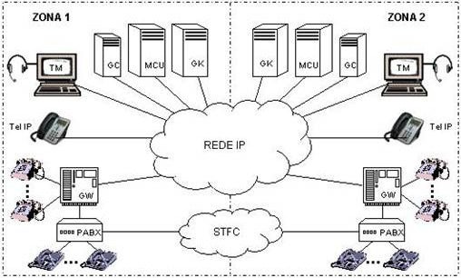
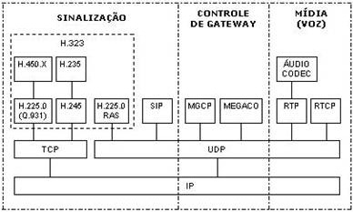

INTRODUÇÃO
1.1
VoIP é a sigla para Voice over Internet Protocol. É uma tecnologia que permite realizar chamadas telefônicas e transmitir dados de voz através do protocolo IP e uma conexão de internet em vez das tradicionais linhas telefônicas analógicas. No sistema de VoIP, a voz é digitalizada e transmitida em pacotes de dados pela rede de internet, sendo convertida novamente em sinal de áudio no destino final. Essa tecnologia utiliza a infraestrutura de rede existente, como a internet banda larga, para realizar chamadas de voz.1.2
Existem várias vantagens no uso do VoIP. Entre elas estão a redução de custos, pois as chamadas entre usuários do VoIP geralmente são gratuitas ou têm custos mais baixos em comparação com as chamadas tradicionais; a flexibilidade, pois é possível fazer chamadas a partir de qualquer lugar com acesso à internet; a possibilidade de integração com outros serviços de comunicação, como videoconferências e mensagens instantâneas; e recursos adicionais, como redirecionamento de chamadas, correio de voz e identificação de chamadas. Economia de custos: O VoIP é conhecido por oferecer uma alternativa mais econômica em comparação com as chamadas telefônicas tradicionais (PSTN). Diferente da rede PSTN, que requer uma rede telefônica dedicada, o VoIP utiliza a infraestrutura de rede existente, como a internet banda larga, as chamadas VoIP podem ser feitas a um custo significativamente menor, principalmente em chamadas de longa distância e internacionais. Integração de serviços: O VoIP permite a integração de serviços de comunicação em uma única plataforma. Além de chamadas de voz, as redes VoIP podem oferecer recursos como videoconferência, mensagens instantâneas, compartilhamento de arquivos e colaboração em tempo real. Isso proporciona uma comunicação mais eficiente e simplificada, aumentando a produtividade e a colaboração dentro de uma organização. Flexibilidade e mobilidade: Com o VoIP, é possível realizar chamadas de voz a partir de qualquer lugar com acesso à internet. Isso oferece flexibilidade e mobilidade para os usuários, permitindo que eles se comuniquem de forma eficaz mesmo quando estão em movimento. Além disso, é possível redirecionar chamadas para outros dispositivos, como celulares ou softphones em computadores, garantindo que as chamadas sejam atendidas independentemente da localização física. Recursos avançados: O VoIP oferece uma ampla gama de recursos avançados, como redirecionamento de chamadas, correio de voz, identificação de chamadas, chamadas em espera, conferências telefônicas e muito mais. Esses recursos aprimoram a experiência de comunicação e fornecem maior controle e personalização nas chamadas.FUNCIONAMENTO DO VOIP
2.1 e 2.2
Amostragem: A primeira etapa é amostrar o sinal de voz analógico em intervalos regulares. A taxa de amostragem padrão para telefonia é de 8.000 vezes por segundo (8 kHz). Em cada intervalo, uma medida é feita para capturar a intensidade do sinal de voz. Quantização: A intensidade medida em cada amostra é então representada digitalmente por um número. Essa etapa é chamada de quantização, em que os valores são arredondados para o valor mais próximo em uma escala predefinida. Quanto maior a resolução da quantização, melhor a qualidade do áudio, mas também requer mais largura de banda para transmitir os pacotes de dados resultantes. Compactação: O próximo passo é aplicar técnicas de compactação para reduzir o tamanho dos dados de voz. Existem vários algoritmos de compactação de voz, como o G.711 ou o G.729, que eliminam redundâncias e informações desnecessárias do sinal de voz. Esses algoritmos comprimem o áudio para minimizar a quantidade de dados a serem transmitidos pela rede. Encapsulamento em pacotes: Após a digitalização e compactação, os dados de voz são encapsulados em pacotes de dados. Cada pacote contém um cabeçalho e uma carga útil. O cabeçalho inclui informações como endereço IP de origem e destino, sequência de pacotes, informações de controle e outros detalhes necessários para encaminhar e processar os pacotes corretamente. Roteamento: Os pacotes de voz encapsulados são roteados pela rede de dados, passando por roteadores e switches. O roteamento é feito com base nas informações contidas no cabeçalho do pacote, que contém os endereços IP de origem e destino. Latência e Jitter: Durante a transmissão, os pacotes de voz podem enfrentar latência (atraso) e jitter (variação no atraso). A latência pode ocorrer devido ao processamento nos roteadores e switches, bem como ao congestionamento na rede. O jitter pode ocorrer quando os pacotes de voz chegam em momentos diferentes devido a variações no tempo de propagação pela rede. Esses efeitos podem afetar a qualidade da chamada se não forem gerenciados adequadamente. Recepção e desencapsulamento: No destino, os pacotes de voz são recebidos e desencapsulados. O cabeçalho do pacote é analisado para extrair os dados de voz compactados. Descompactação e decodificação: No destino, os pacotes são descompactados e decodificados para reverter o processo de compactação e quantização. A carga útil é reconstruída em forma de sinal de voz digital. Conversão para sinal analógico: Finalmente, o sinal de voz digital é convertido em sinal analógico, utilizando um conversor digital-analógico (CDA). Isso permite que o áudio seja reproduzido em alto-falantes ou fones de ouvido para que as pessoas possam ouvir a voz transmitida.2.3
A QoS (Quality of Service) é essencial para garantir a qualidade das chamadas VoIP, transmitidas pela internet. É necessário ter uma conexão de banda larga de alta velocidade e estabelecer uma política de priorização do tráfego na rede. A QoS oferece recomendações e padrões para priorizar o tráfego, assegurando chamadas VoIP sem interrupções. Com base em valores DSCP, é possível criar políticas de QoS que definem a prioridade do tráfego de rede. A QoS permite estabelecer padrões específicos para a rede, minimizando problemas e proporcionando chamadas claras e estáveis. (DSCP (Differentiated Services Code Point) é um campo presente no cabeçalho do pacote IP que define a prioridade de tratamento de um pacote de dados em uma rede)ARQUITETURA
3. Na telefonia convencional, a rede segue uma estrutura hierárquica, com grandes centrais telefônicas interligadas que possuem o controle centralizado. Os terminais são simples e seu endereçamento é baseado na geografia da área de cobertura da rede.
Por outro lado, na telefonia IP, a rede é plana e não hierárquica. Ela é especializada no roteamento e transporte de pacotes de dados e oferece diversos tipos de serviços. Os terminais são inteligentes, não dependem de sua localização geográfica para endereçamento, e o processamento e realização das chamadas ocorrem em diferentes equipamentos distribuídos pela rede.
A arquitetura típica de uma rede de telefonia IP é composta pelos seguintes elementos:

Rede IP: É a rede de dados que utiliza os protocolos TCP/IP para transportar e rotear os pacotes de dados entre os dispositivos conectados. Pode ser dividida em um ou mais segmentos de rede, dependendo do seu tamanho.
Sistema de Telefonia Fixa Comutada (STFC): É o sistema convencional de comunicação de voz que interliga residências e empresas em âmbito nacional e internacional. Também inclui o sistema de telefonia móvel atual.
PABX: É o equipamento utilizado em empresas para fornecer serviços privados de voz. Geralmente, são sistemas digitais que se conectam ao STFC ou sistemas de telefonia móvel para realizar chamadas externas.
Terminal Telefônico Convencional (Tel): É o telefone tradicional utilizado em residências e empresas. Em sistemas digitais mais modernos, os telefones podem ser digitais para oferecer funcionalidades adicionais além da comunicação de voz.
Terminal Telefônico IP (Tel IP): É o telefone projetado para a comunicação de voz em redes IP. Possui todas as funcionalidades e protocolos necessários para suportar a comunicação bidirecional de voz em tempo real e a sinalização de chamadas. As funcionalidades adicionais integradas dependem do objetivo e custo do terminal.
Terminal Multimídia (TM): São computadores preparados para a comunicação de voz em redes IP. Assim como os telefones IP, possuem todas as funcionalidades e protocolos necessários para suportar a comunicação bidirecional de voz em tempo real e a sinalização de chamadas. Podem ser utilizados em aplicações mais complexas, como call centers e estações de conferência multimídia.
Gateway (GW): É o equipamento responsável pela interoperabilidade entre a rede IP e o STFC ou sistemas de telefonia móvel. Realiza a conversão de mídia em tempo real, convertendo voz analógica em voz digital comprimida, além de converter a sinalização para as chamadas telefônicas.
Gateway Controller (GC): É o equipamento responsável pelo controle das chamadas em andamento realizadas pelos gateways. Também conhecido como Call Agent, utiliza e gera informações de sinalização e comanda os gateways para iniciar, acompanhar e encerrar chamadas entre terminais distintos.
Multipoint Control Unit (MCU): É o equipamento responsável pelos serviços de conferência entre três ou mais terminais. É composto por um Controlador Multiponto (MC), responsável pela sinalização das chamadas, e por um Processador Multiponto (MP), responsável pelo processamento dos pacotes de dados dos sinais de voz dos terminais envolvidos na conferência.
Gatekeeper (GK): É o equipamento responsável pelo gerenciamento de um conjunto de equipamentos dedicados à telefonia IP, incluindo telefones IP, computadores, gateways, controladores e unidades de conferência. Suas principais funções incluem a tradução de endereçamento dos dispositivos, controle de acesso à rede dentro de uma determinada zona e gerenciamento de banda.
Zona: É um conjunto de terminais, gateways e unidades de conferência gerenciados por um único gatekeeper. Fisicamente, uma zona pode ser composta por um ou mais segmentos de rede interligados por roteadores ou dispositivos semelhantes. Em comparação com os sistemas telefônicos convencionais, uma zona corresponde a uma área com um determinado código de localidade, como uma cidade ou um grupo de cidades, dependendo do tamanho e do número de terminais.
PROTOCOLOS UTILIZADOS NO VOIP
4
Existem três tipos de protocolos usados no serviço de voz sobre IP (VoIP): protocolos de sinalização por controle de chamada, protocolos de sinalização por controle de gateway e protocolos de transporte de voz.4.1
No primeiro tipo, temos o H.323, que é mais antigo e complexo, utilizado por telefones IP, adaptadores IP e gateways para controle de chamadas. O SIP(Session Initiation Protocol) é um protocolo mais moderno e menos complexo, amplamente adotado atualmente, que também permite o estabelecimento de serviços adicionais, como conferência e identificação de chamadas.4.2
No segundo tipo, temos o MGCP(Media Gateway Control Protocol), utilizado por controladores de gateways para controle de chamadas, e o MEGACO, uma alternativa ao MGCP que também se adequa a diferentes sistemas de telefonia.4.3
No terceiro tipo, temos dois importantes protocolos. O RTP(Real-Time Transport Protocol) é responsável pelo transporte de voz em tempo real entre gateways e computadores, podendo ser usado em transmissões de um para muitos (multicast) ou de um para um (unicast). O RTCP(Real-Time Transport Control Protocol) controla o transporte de voz realizado pelo RTP nos sistemas VoIP.
Esses protocolos passam por três etapas: estabelecimento da chamada, acompanhamento da chamada e finalização da chamada. Durante a chamada, são criados canais virtuais de controle e monitorados eventos relevantes, como perda de conexão. Ao final da chamada, os terminais e equipamentos envolvidos são liberados. O processamento de voz ocorre em dois processos: controle do transporte de voz, onde os terminais definem o mecanismo de transporte e criam canais virtuais de controle e mídia, e transporte de mídia, onde a voz é transportada bidirecionalmente pelos canais virtuais estabelecidos. Em resumo, esses protocolos são utilizados para estabelecer, controlar e transportar chamadas VoIP, passando por diferentes etapas e processos para garantir uma comunicação eficiente.